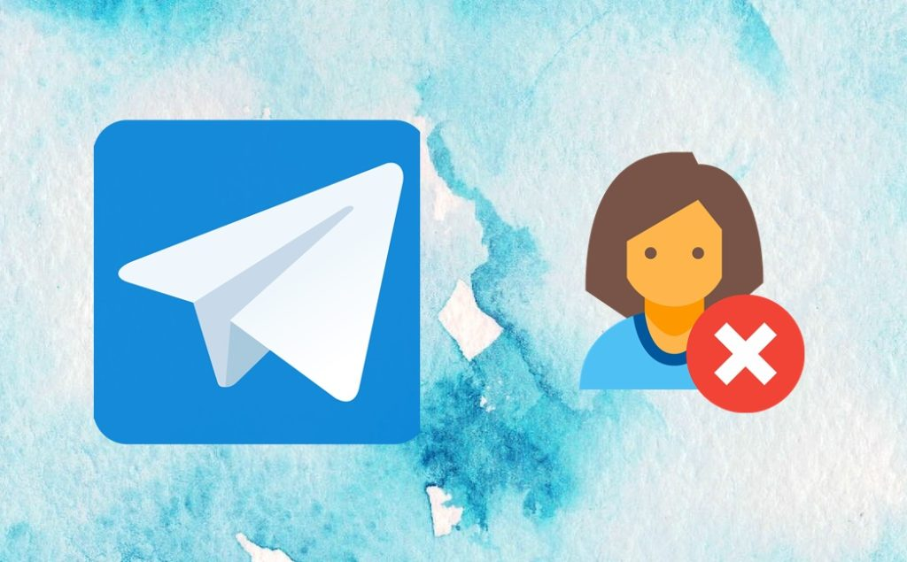
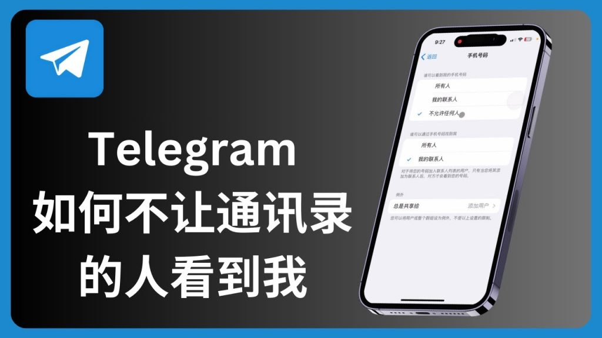

要阻止别人加你为Telegram联系人，可以进入“设置”>“隐私与安全”>“联系人”，选择“谁可以添加我为联系人”。在这里，你可以选择“我的联系人”或“没有人”，限制只有你认可的人才能添加你为联系人。此外，用户还可以限制谁可以邀请你加入群组，从而进一步控制他人如何与你互动。

进入隐私设置: 打开Telegram应用，点击左上角的菜单图标，进入“设置”界面，接着选择“隐私与安全”选项。在此页面中，你可以找到所有与隐私相关的设置。
选择联系人设置: 在“隐私与安全”页面中，找到并点击“联系人”选项，这将带你到一个新的页面，在这里你可以控制谁可以添加你为联系人。
选择合适的权限: 在“谁可以添加我为联系人”设置中，你可以选择三种权限选项：选择“所有人”表示任何人都能添加你为联系人，选择“我的联系人”则限制只有你已添加的联系人能将你加为好友，而选择“没有人”则完全禁止其他人添加你为联系人。
控制谁能看到你的电话号码: 在“隐私与安全”设置中，选择“电话号码”选项，用户可以选择谁可以查看你的电话号码。将此选项设置为“我的联系人”或“没有人”可以有效避免陌生人通过电话号码搜索到你。通过这种方式，只有你认可的人才能看到你的电话号码，从而减少陌生人联系你的机会。
禁止陌生人发送消息: 在“隐私与安全”中，你可以设置“谁可以给我发消息”，选择“我的联系人”后，只有你的联系人能够给你发送消息。这样，你将不会收到来自不认识的人的消息，避免了垃圾信息和骚扰。
限制群组邀请权限: 在“隐私与安全”设置下，选择“群组”选项，你可以设置谁能邀请你加入群组。通过设置为“我的联系人”，只有你认可的人才能邀请你加入群组，这样可以有效避免被陌生人加入不相关的群组或频道，避免无关人员的干扰。
进入隐私与安全设置: 打开Telegram，点击左上角的菜单图标，进入“设置”页面，接着选择“隐私与安全”选项。
限制个人信息的可见性: 在“隐私与安全”设置中，你可以选择谁能够查看你的电话号码、个人资料图片、在线状态等。设置为“我的联系人”或“没有人”可以有效保护你的隐私，避免陌生人看到这些个人信息。
管理谁能搜索到你: 在“隐私与安全”设置下，选择“电话号码”选项，设定谁能通过电话号码搜索到你。将其设置为“没有人”或“我的联系人”，可以防止陌生人通过电话号码找到你的账户。
隐藏电话号码: 在“隐私与安全”页面，点击“电话号码”选项，你可以选择让“我的联系人”或“没有人”查看你的电话号码。这样就可以防止不认识的人通过你的电话号码找到你。
设置个人资料图片权限: 在“隐私与安全”中，选择“个人资料照片”，你可以设置谁能够看到你的资料照片。将其限制为“我的联系人”或“没有人”，可以有效避免陌生人查看你的个人资料图片。
隐藏在线状态: 在同样的设置页面，选择“在线状态”选项，你可以设置谁能查看你的在线状态。通过设置为“我的联系人”或“没有人”，你可以防止不认识的人知道你是否在线，进一步保护隐私。

设置电话号码可见性: 进入“设置”>“隐私与安全”>“电话号码”，选择谁可以查看你的电话号码。将其设置为“我的联系人”或“没有人”，可以有效避免陌生人通过电话号码找到你。
限制电话号码搜索: 在“电话号码”选项中，你还可以选择谁能通过电话号码查找到你的账户。选择“没有人”后，陌生人将无法使用你的电话号码添加你为联系人。
阻止陌生人添加你为联系人: 在“隐私与安全”页面中，选择“联系人”选项，设置“谁可以添加我为联系人”。选择“我的联系人”或“没有人”后，只有你的联系人或特定人员才能添加你为好友，避免被陌生人添加。
设置在线状态可见性: 在“隐私与安全”设置中，选择“在线状态”选项，你可以选择谁能够看到你是否在线。将其设置为“我的联系人”或“没有人”，可以有效防止陌生人看到你的在线状态。
设置排除联系人: 如果你只想让部分联系人看到你的在线状态，Telegram允许你使用“排除”功能。在设置中选择“排除”，可以选择特定联系人无法查看你的在线状态，保护隐私。
隐藏最后在线时间: 在“隐私与安全”设置下，除了在线状态外，你还可以选择隐藏最后的在线时间。设置为“没有人”后，其他人将无法知道你最后一次在线的具体时间，进一步增强隐私保护。
限制消息发送权限: 在Telegram的“隐私与安全”设置中，选择“消息”选项，用户可以设置“谁可以给我发消息”。将其设置为“我的联系人”或“没有人”，这样只有你信任的人能够向你发送消息，避免收到陌生人的骚扰信息。
使用“没有人”选项: 如果你想彻底屏蔽陌生人消息，可以将此选项设置为“没有人”。通过这种方式，陌生人就无法直接向你发送任何消息，只有你主动添加的联系人才能和你交流。
定期清理聊天记录: 如果有不认识的人已经发送消息，可以定期清理Telegram中的聊天记录，删除不必要的对话。你也可以选择将某些骚扰信息标记为垃圾信息，并报告给Telegram，以防止以后遇到类似的骚扰行为。
控制谁能添加你为联系人: 在“隐私与安全”设置中，选择“联系人”，在此处可以设置“谁可以添加我为联系人”。将其设置为“我的联系人”或“没有人”将有效阻止陌生人通过搜索你的电话号码或用户名将你添加为联系人，减少无关人员的打扰。
通过排除功能阻止特定联系人: Telegram允许你使用“排除”功能，在“隐私与安全”中，你可以选择特定的人，禁止他们查看你的在线状态或发送消息。这个功能帮助你控制哪些人无法干扰你，即使他们是你的联系人。
设置谁能加入你的群组: 如果你不想让陌生人邀请你加入群组，可以在群组设置中限制权限，设置为“我的联系人”或“没有人”。这样只有你信任的人可以邀请你加入群组或频道，从而避免加入不相关或陌生的群组，防止受到更多的骚扰。
进入隐私与安全设置: 打开Telegram应用，点击左上角的菜单图标，进入“设置”页面。然后，选择“隐私与安全”选项，进入账户隐私设置。在这里，你可以找到关于联系人、消息和通话的各项权限设置。
选择“谁可以添加我为联系人”: 在“隐私与安全”页面，找到并点击“联系人”选项。点击进入后，你将看到“谁可以添加我为联系人”设置。这一选项决定了谁能够通过Telegram搜索添加你为联系人。
选择合适的限制: 在该设置中，你可以选择三种权限设置：“所有人”、“我的联系人”或“没有人”。选择“我的联系人”后，只有你已经添加的联系人能够将你添加为好友，而选择“没有人”则完全阻止任何陌生人添加你为联系人，确保隐私不被侵犯。
设置电话号码可见性: 在“隐私与安全”设置中，选择“电话号码”选项。你可以选择谁能看到你的电话号码。将此选项设置为“我的联系人”或“没有人”，可以有效避免陌生人通过电话号码找到你，并添加你为联系人。
使用排除功能: 在“隐私与安全”设置中，Telegram提供了“排除”功能，允许用户选择特定的人不允许他们查看自己的资料或添加为联系人。通过这种方式，用户可以精确控制哪些联系人不能接触自己，确保自己不会收到不必要的打扰。
控制群组邀请权限: 除了限制联系人添加权限，Telegram还允许设置谁能够邀请你加入群组。在“隐私与安全”设置下，找到“群组”选项，选择“我的联系人”或“没有人”，限制谁能邀请你加入群组。这样，陌生人就无法随意将你拉进不必要的群组，减少了不必要的社交干扰。
如何阻止陌生人在Telegram中添加我为联系人？
如何隐藏我的电话号码，防止别人通过电话号码加我？
如何设置Telegram防止陌生人邀请我加入群组？
在中国使用Telegram通常需要依靠虚拟私人网络（VPN）服务来绕过网络限制。首先安装并启动一个可靠的VPN […]
Telegram是一款功能丰富的即时通讯应用，提供端到端加密的私密聊天，支持发送文本、图片、视频和文件。它还支 […]
在Telegram中，如果你删除聊天记录，你可以选择同时删除对方的记录。如果你只选择删除自己的聊天记录，对方仍 […]
要在Telegram设置中文，请打开应用，点击右下角的“设置”图标，选择“语言”或“Language”，然后从 […]